Identify and evaluate websites. Select two or more websites to explore in detail for this task.
The chosen websites:
Yale Art School Website:
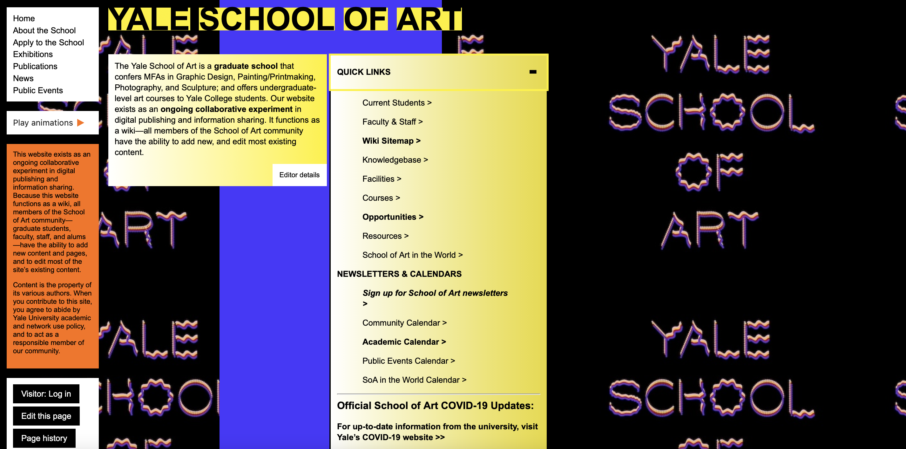
The audience:
Can you tell who the project is aimed at?According to the information available on the website itself: "it exists as an ongoing collaborative experiment in digital publishing and information sharing. Because this website functions as a wiki, all members of the School of Art community — graduate students, faculty, staff, and alums — have the ability to add new content and pages, and to edit most of the site’s existing content". Therefore, I would say the main audience is Yale students and staff. However, the website is available for everyone to see and quite popular too from what I've seen and heard, as I knew about it before. It could be of interest to people who want to apply to study there, as it has useful info about fees, application process, news and ongoing/past events. It also has a disclaimer that this content is accurate and kept in check regularly despite everyone having access to editing the website visually.
Does the range and depth of material seem appropriate for the topic and audience?
I think the depth and range of material available on this website is very much appropriate. The only thing is that this website is not very inclusive and very difficult to navigate for people with disabilities. However, I know that Yale has an accesible version of the site as well, therefore the idea works (in a way). Additionally, there's a lotttt of scrolling involved because there's so much information, but I guess it is useful for people who are the target audience for it and interested in the school. Therefore, it surprisingly has lots of useful information, as listed above, and a communiation/admin person to surpervise it. Potentially, the website has too much information as an "experiment", but the content is relevant nonetheless.
Does the project provide any means of feedback, interaction, experience?
The whole website constitutes an experience for the user and it's effective in a way that will definitely shock the individual visiting it and make them remember about it or tell their friends because it's so bizzare. The website doesn't have a comment or feedback section open to everyone. The only people that can contribute and add stuff to it are Yale students and staff with YaleID. They can not only edit the way everyone can see the website, but also have a portal for adding their projects, work and thoughts.
Affordances, conceptual models and signifiers:
What is the purpose of the project?
According to the announcement on the website, "the website exists as an ongoing collaborative experiment in digital publishing and information sharing. It functions as a wiki—all members of the School of Art community have the ability to add new, and edit most existing content". It's a fun version of an informative University website.
How easy or complex is the project to use/navigate?
The website is surprisingly easy to navigate for me, as it's very straight-forward in a sense that specific links lead to accurate, respective places you want to go. However, due to an eccentric design with lots of colours and unnecessary boxes for text, as well as long pages where you can scroll for ages, the website is definitely confusing and difficult to move around, especially for people with almost any kind of disability. The website is also quite complex, not in design or navigation, but because it has lots of information (like lots, lots...). I kinda like the dropdown menu as it allows you to get directly into what you want to look at, but I am guessing it's quite difficult to find exactly what you are looking for because there's no search box.
Can you tell where you have been, where you are and where you can go?
You can kind of tell where you have been if you remember, but it's still very disorientating. You can also easily access pages like Home, About the School, Apply etc. on the top left side on the screen. However once you click any of the links, you can no longer see the "Quick Links" tab that you can see at the Homepage, which is more extensive. Therefore, the user cannot really move around the website intuitively and has to remember pathways to get to things, which is not good design. That said, you can tell where you are, as each page visited has a header or a title that tells you what the tab is about. However, the connections between all the other tabs are not smooth and you have to go back to Homepage to go to certain pages and you cannot access everything from it either, which forces you to explore individual links for further info/connections on what you are looking for. Additionally, links look similar to those on a search engine, which firstly doesn't look nice, but also doesn't change colour after you visit a certain link (on Google the links you previously visited turn purple), which makes it confusing and puts the responsibility on the user to remember exactly where they are and which links they already visited despite them all looking the same.
How does the site use images, text, sound and moving images – are they just illustration or something more?
The images and text are all over the website in odd boxes or on a huge colorful background that's overwhelming. Additionally, there is a lot of animations going on at the same time, but luckily the user can choose to pause them. I haven't noticed any sounds. On this website, the images and animations are part of the web design and constitute elements like background, announcements, and text box backgrounds. They are rarely used for illustration, which makes the website very flashy and non-inclusive.
Contrast, Repetition, Alignment, Proximity:
Does it make effective use of layout, graphics, colour? For example: the positioning of information; does the background image or colour enhance the presentation of information; are the foreground and/or text colours contrasted sufficiently?It doesn't make effective use of graphics or colour. I think the homepage layout is quite alright for a school site, however users can get lost navigating
the website. Therefore, the movement around the website and the layout of the links present all over all different pages as you explore is very confusing.
The positioning of information is odd, as you can scroll text in individual text boxes, therefore you cannot see all info immediately. I am not the target
audience for the website, as I am not a Yale student, so it's difficult for me to assess what information is relevant for them and what is extra. I think
most important info can be accessed from the "Quick Links" menu and then the other little menu on the top left. However, it might be more difficult to find
info about perticular exhibitions or publications due to no search bar.
The background image or colour (both) do not enhance the presentation of information. They enhance how bad the design is. All the colours on the website
are random and different from each other, which makes the users want to leave. There is a bit of contrast coming from the colourfully-filled text boxes,
but sometimes the title letters blend in with the background as they are the same colour. However, have in mind that each page has a different animated
background, so colours and movements on the whole website vary between tabs.
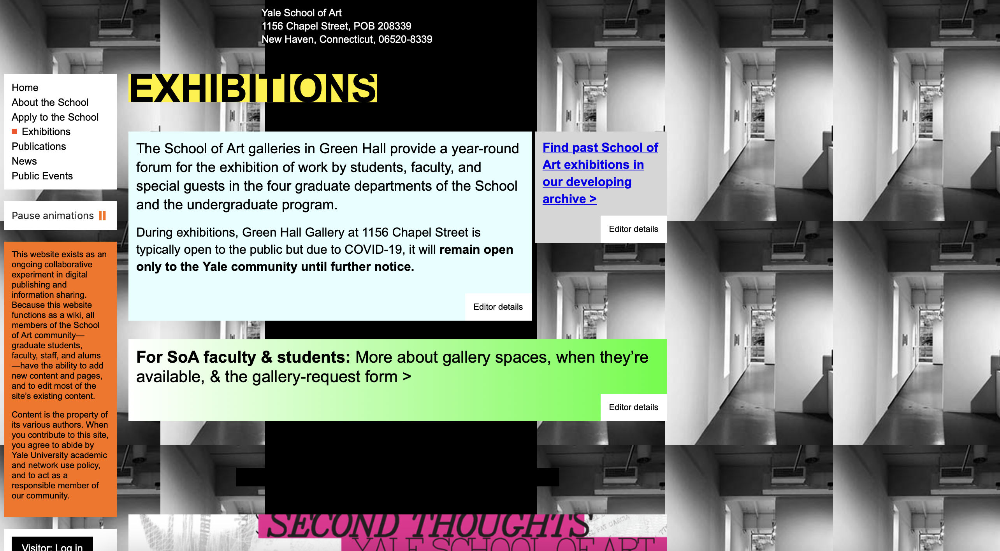
Does it use symmetry and balance to good effect?No, it doesn't. All the information and the text boxes are cramped on the left side of the screen, which leaves an awkward space on the right of the screen where we can only see the animated, flashing background image. There is simply no blanace when it comes to this site.
Is the information, navigation, graphics etc. laid out in a consistent way?
Nothing is quite consistent on this website. I think I elaborated on this question enough above.
Content Design:
Does the website work on an original problem relevant to the audience?I wouldn't say it works on a problem, but it works as a cool inside communications experiment. Additionally, it promotes the Yale Art School due to its uniqueness and it makes people laugh or share the website with their friends and family because its so unusual for an academic insitution to do this. So in the end, it works as a great marketing piece for promoting the school because it's obviously bad on purpose.
Does the range and depth of content provide appropriate coverage of the subject?
Yes, I think there is more up-to-date information on this website then you would expect from looking at it. There is even an event calendar that's pretty clean and neat amongst the overall messy look.
How relevant is the content to the subject matter, project aims and intended audience?
It is absolutely relevant and up-to-date. Not everything is on there obviously, as it's not the official website, but there's shockingly a lot of useful info for its target audience of Yale students or those who want to learn about the school's activities.
Is the content analytical, readable, correct, accompanied by reliable supporting evidence?
The content is readable, but it's not contrasted or positioned well, so the overall design is not good. However, everything seems correct and reliable because it provides the links to the actual school website. From my position right now, I probably wouldn't trust it as my main source of information regarding the school's activities, but it may be different for Yale students.
Does the project display wider knowledge by reference to other works, either in analogue or electronic form?
The website does have many links to external sources. There is way too many links there then I could explore myself, but from what I've seen, it references official Yale sources/websites in electronic form that then lead or recommend viewing of an analogue source available at the school or attending an event in person or online.
The White House Website:
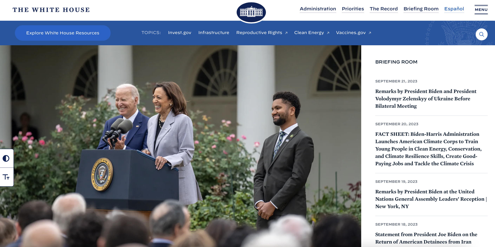
The audience:
Can you tell who the project is aimed at? I think the project is an informative, news-sharing site about the White House and the US government achievements/activities, so it seems to be aimed at everyone who is seeking information about that directly from the source. We could also say that it's for American citizens and people that live there and want to be updated on the goverment's doings. However, while going through it I noticed the information present is quite biased and only positive, but I guess that's how all politics are. I think the website aims to spread the democrat agenda because democrats are in charge now. But there's also archival info on past presidential families and info about the White House grounds and offices.Does the range and depth of material seem appropriate for the topic and audience?
Yes, I think there is a lot of useful and informative content available on the website and it also gives people further resources. There's info on administration and their biographies, the White House grounds, past presidents, first families, government and their priorities, the offices and there's even a version of the site in Spanish because it's the second most spoken language in the States.
Does the project provide any means of feedback, interaction, experience?
Yes, but other users cannot see it. It's not comments or reviews or forum style. It is more to request something from the White House administration.
So it gives people the interaction they want and users can also request a greeting from the president for special occassions. Therefore, the website is
great and it gives you the experience to feel more connected to the leaders of the country. I requested a card for my 23rd birthday in February just now
and will update you if it comes next year. This experience made me laugh and excited to receive something from the White House even through I'm not American
and will probably never receive the greeting card.
Additionally, you can opt in to get email updates/newsletter or sign up for consistent government updates, which keeps the engagement going beyond
just visiting the website. People check their emails more than they visit the White House website, so it's a good tactic to keep people engaged and thinking
about all the good things they read on the site before.
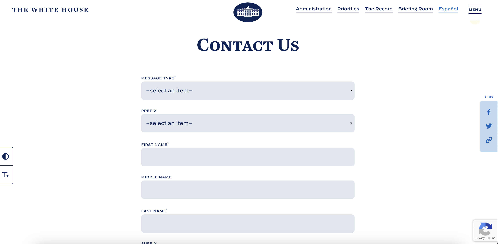
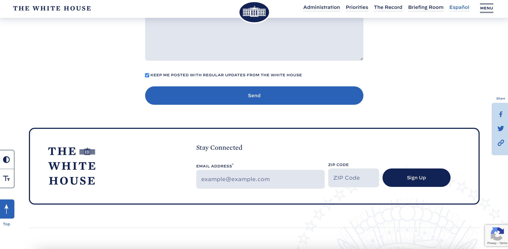
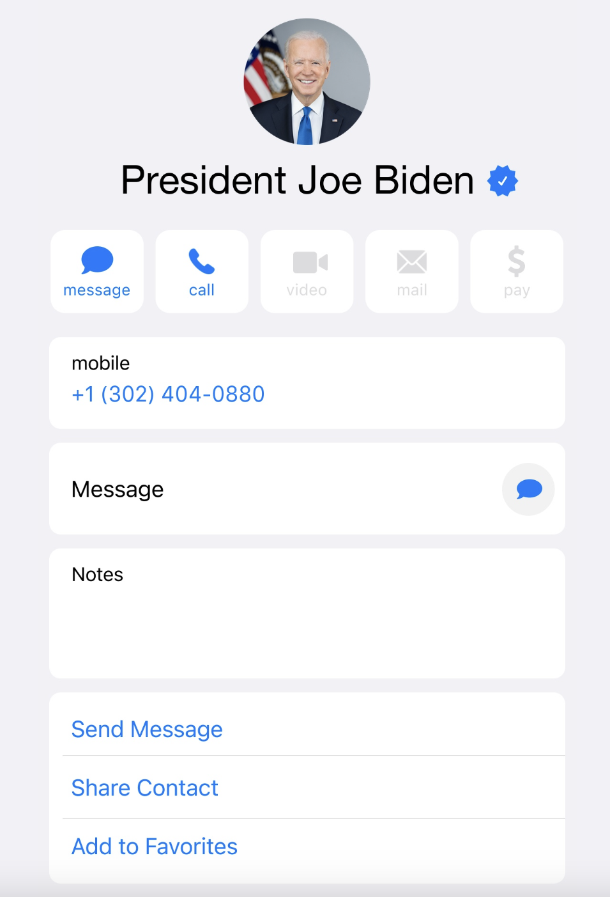
Affordances, conceptual models and signifiers:
What is the purpose of the project?
I think there are multiple purposes when it comes to this website. The obvious one is the informational part, where people can read all about the things I listed above - about the good things the White House administration is doing for the USA. Therefore, the second purpose is to portray the democrat party favourably as the website seems quite biased and tends to omit all the failures of the current administration. That said, if you visit any company site they also wouldn't mention any bad parts of their business. So this is quite normal in the society we live in. Next, the purpose is also to engage with the people looking at government from the civilians' perspective. They can request things like regular updates, greeting cards from the president, and to contact the vice and the president directly in the "Contact Us" form you can see above on the photo. So the website shares information, updates and news from the government, as well as gathers information from users, respectively (through them filling out and sending over the contact forms with personal info or their behavioural data while interacting with the site).
How easy or complex is the project to use/navigate?
It is super easy to use and navigate. So easy that everyone could use it. This is the point of it after all, since you can request a presidential greeting for your 50/60/80th wedding anniversary. The website is not very complex, but has a lot of useful information on it. Everything is clean and nicely categorised/organised.
Can you tell where you have been, where you are and where you can go?
Yes, the tabs are nicely linked so that the user can move around intuitively. Everything can be accessed either from the homepage or the upper menu,
so even if you get lost, you can just go back to homepage and re-enter the same way you came in. Additionally, there are buttons on the same page that
lead you back directly to the top of the page or a certain spot on the page if you are looking for specific info, so you don't need to read everything
and skip to the part relevant to you.
Out of curiosity I checked an archival version of the White House website during Barack Obama's presidency and it looked very different, with many more links
and information divided in topics. Now, they utilised photos and layered them in order to represent links for this info. You can view an example of this for
"The Administration" category below. It's interesting to see how web design developed and upgraded over the years. It became simpler and more accessible
for everyone, especially those with short attention spans and visual impairments.
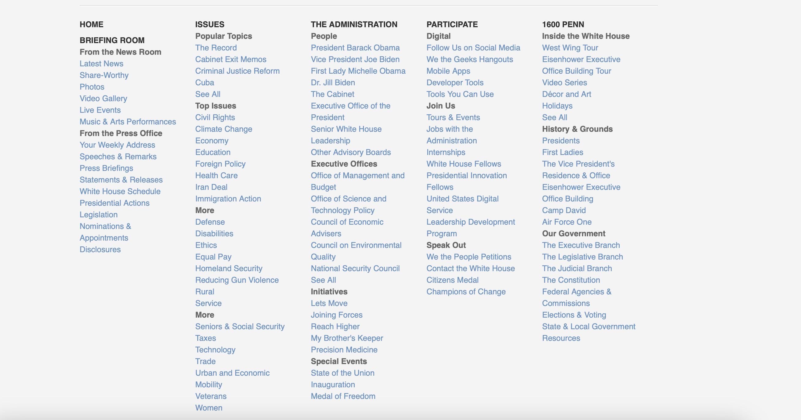

How does the site use images, text, sound and moving images – are they just illustration or something more?
As I just mentioned, the images are used as links. So if you click on an image of Joe Biden, the link leads you to his biography page. Same thing goes for the offices and past presidents tab. Also, the first time you enter the homepage or any page on the website the images have an animation/movement of sliding-in. Same with text, but then they both stay static, so you can view/read it. All images and text correspond to what they are talking about or illustrating. Unlike the Yale Art School website, the titles to news topics or the majority of captions is also a link to another page, not just empty, static text. When you browse online you are used to clicking links or a part of page that interests you, so it's frustrating when you cannot "see more", but it is not a problem when it comes to the White House webpage.
Contrast, Repetition, Alignment, Proximity:
Does it make effective use of layout, graphics, colour? For example: the positioning of information; does the background image or colour enhance the presentation of information; are the foreground and/or text colours contrasted sufficiently?Everything is easily available and positioned according to professional standards. The background is mostly white, but when it's an image, it enhances the
presentation of information. To me, the website looks very sleek and great as it is, but the user has an option to toggle a high contrast theme, as well as
to enlarge text. This is controlled through the buttons visible on the left side of screen, which makes the website accessible. You can easily access the
accessibility statement itself as well.
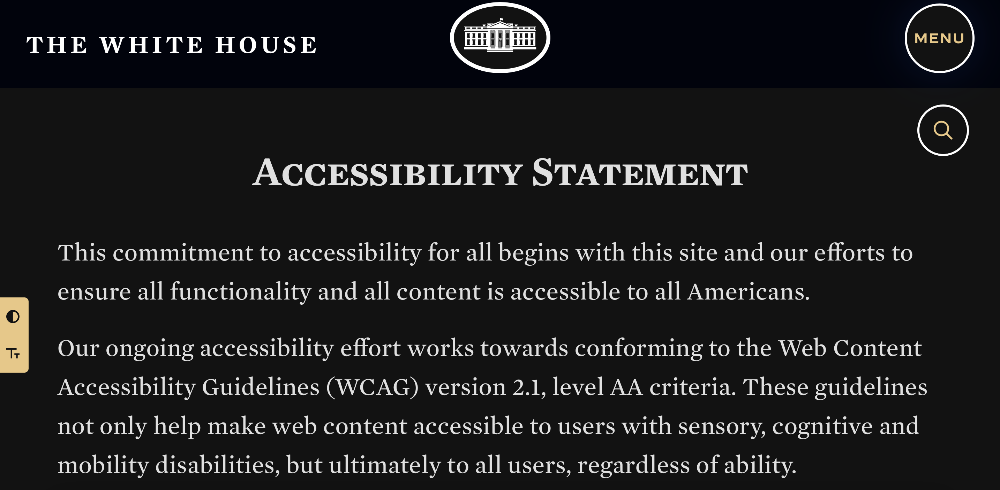
Does it use symmetry and balance to good effect?
Yes, no matter what version of the site you choose, the pages are symmetrical and balanced well.
Is the information, navigation, graphics etc. laid out in a consistent way?
Yes, the colours are the same across the whole website and follow a white-black-grey-blue colourway for their respective elements. Navigation and graphics are also consistent as explained previously.
Content Design:
Does the website work on an original problem relevant to the audience?I would say it works on multiple problems. I am going to skip the general purposes of the site, as I outlined them above and move to the accessibility problem that the website addresses very well. Firstly, there are many disabled people in the USA and even more around the world, so the site aims to eliminate barries for those people being able to access information from a reputable source. According to Pew Research Centre, "there are about 42.5 million Americans with disabilities; this group includes people with hearing, vision, cognitive, walking, self-care, or independent living difficulties". Therefore, the website tackles the problem of "being accessible to all Americans" very well, beginning with the option for high contrast look to accessible colors and font size increase. Everything is selectable and easy to use with assistive technologies for the blind or deaf. Secondly, there is a whole version of the website in Spanish, which makes it accessible to an even larger crowd of people who do not speak English. The content on that site is different and more outdated, but it is an option at least. This is an original problem in the USA, as according to VOA News, "Spanish is by far the most popular second language in the United States, with more than 41 million people — 12 times more than the other most common second languages — speaking Spanish at home". Therefore, the website tackles the idea of making the information accessible to everyone, but it needs to be maintained more frequently.
Does the range and depth of content provide appropriate coverage of the subject?
When talking about the English version, it has more information than I would expect. You can tell the news tab is up-to-date and continuously updated. This cannot be said for the Spanish version of the website, as the last entry in from June 2023. However, both sites have the basic info tabs and general knowledge about the cabinet, offices, grounds, administration, and all the menu links are the same. It's only the news and events section that's behind. I think the range and depth of informative general information is appropriate.
How relevant is the content to the subject matter, project aims and intended audience?
Very relevant. Elaborated on that in above questions.
Is the content analytical, readable, correct, accompanied by reliable supporting evidence?
Not everything is backed up by evidence or source links, but because it's the White House we can assume the elements like biographies and historical tabs are correct and of course they are readable. This is because the White House works with historical organisations that definitely monitor the information that the White House has on past presidents and first families. I think because the White House is a high-profile organisation there's a lot of people keeping an eye on it's operations and the accuracy of the information it provides to people. Not talking about the political side of things. Just objective/historial information. Of course, we can argue whether all historical information is accurate (it's most likely not but we have to accept a version to relay to others), but I won't get into it any more here.
Does the project display wider knowledge by reference to other works, either in analogue or electronic form?
There are external links present on the site. Examples are reproductiverights.gov or vaccines.gov that lead you to other government sites. I couldn't find any references to external non-government websites, so everything is kept within a certain ecosystem to avoid controversy and outrage from unauthorised content being published.
Consider and make notes on how some of the features you examined might be suitable or unsuitable for your chosen audience. Try to adopt the mindset of one of your user personas and imagine how they might feel when interacting with the website.
I think most of the White House website features would be useful for my website. The design is clean and easy to move around, which is important to anybody, but especially seniors who have minimal experience of interacting with the information available online, so everything needs to be very straight-forward and easy for them to get a grasp on quickly. The White House website has accessibility features and serves as a point of information. This can help my personas if they have any non-visible disabilities, even such as bad eye-sight or colour blindness or any mobility issues so that they can use assistive technologies together with the website itself. A feature enabling the font size increase and contrast would be great. I probably wouldn't use the news column or the submission forms. The topic might be controversial to different audiences and I wouldn't want the website to become a forum, therefore no comment section. Maybe a Contact form instead, so users can let me know if any information is incorrect or outdated or make me aware of any other issue with the site. It would be nice to incorporate pictures as links, have a retractable menu, and use white space effectively for a sleek look. Maybe similar animations when opening the page at first, but nothing too overwhelming, only basic slide-ins. I would not use any features used in the Yale Art School page. I want my personas to feel calm and confident in their learning abilities - as much as the information they are reading might be alarming to them at first - so each article wouldn't contain all the information, but each page would be very focused instead. That said, there are elements where the design could be emphasised, such as important numbers, or "fun fact" boxes to make the experience enjoyable.
My Website Design Moodboard on Pinterest:
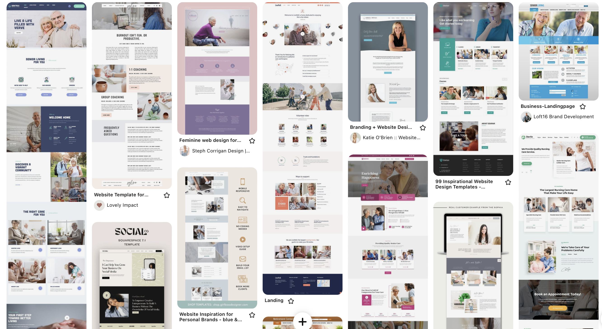
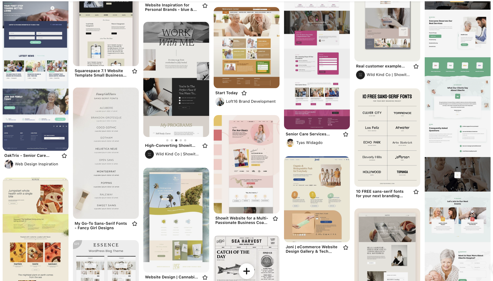
Identifying your audience(s)
Things to consider while making this choice:
I think the topic lends itself especially to young adults and adults because this demographic uses the internet or online services most. However, I decided that I want my website to be very specific and focus on those most vulnerable online, which leaves two groups - children and the elderly. There is a specific way of relaying information for both of those groups. When it comes to children, there's a certain simple language that needs to be used, so that they are able to interact with the interface. The overall design would need to be colourful to catch their attention, but also accessible in terms of those colours and fonts and sounds, etc. because children view the world differently. For them, ideal learning in the digital form would probably take place through gamification. That said, this topic is not appropriate for children yet and I don't think I'm going to be able to do all of that for this project, therefore I'm going to go with the UK elderly. This is because I live in the UK and have access to that audience for testing. Also, because elderly is often forgotten or written off by people developing various online learning resources, like they are not worth investing in anymore, which is not true. I believe they deserve to have educational resources dedicated to them for any topic really. This topic is just especially perfect because it borders on security and privacy in the digital world and it's something that age demographic is not being taught beyond how to be aware of scams. But there is so much more to learn and consider here and you shouldn't have to be an expert or a computer mogul to have readily access to that information. I think because the elderly learn a bit slower or different than young adults they just need a little help with processing the information and sort of summarising the general concept. That's why I think my website's topic lends itself to the elderlyor older adults the same or even more than every other age group because the amount of older people in the UK using the internet is huge (75% for over 75s) and no one teaches them about how their actions or behaviours online are tracked and used to fuel a business strategy like surveillance capitalism. I think they would be curious to learn, because it afects them too.
I want to focus entirely on older adults (60+) to the elderly. As I mentioned before, there are websites on the market dedicated to them learning how to use a computer, email, etc., but none of those websites really comment on the implications of using those technologies. Therefore, I want to spread the word and interest as many older internet users as possible in it, in order to further educate them or simply stimulate their curiosity and understanding of the processes currently present in the digital world.
This is an interesting question when it comes to my topic. This is because I think everyone kind of notices and knows of the tools that enable surveillance capitalism to work like cookies or trackers - you have to agree to them at every website you visit and usually can't skip the pop-up. So I think my audience will know what I am talking about through their own (even if limited) experience of browsing the web and noticing the pop-ups. However, I doubt that a lot of people, especially the older ones, know about the concept of "surveillance capitalism" and its implications to their personal life, as well as the society's as a whole. So for the purpose of producing a good educational website for seniors I am going to assume that they have no previous knowledge of the topic at all, so I can explain everything from the start. It's a thing that's there, but hidden between the lines and terms and conditions that simply needs someone to summarise it and inform people in simple terms how their data is being used.
I have access to a lot of young adults because they are in my age group and I know a lot of them through University. Those people could potentially help me spread the word and pass on the website to their families and grandparents or even parents. I could also ask more young adults online to do the same through the power of social media.
| Audience characteristic | Rationale |
|---|---|
| Age | 60+ (older adults and elderly) |
| Gender | All genders; everyone can get engaged |
| Language proficiency | English proficiency expected; project directed at UK audience |
| Educational level | Not specified; accessible to all UK elderly who use the internet |
| Attitude towards writer or organisation | Most people open to learn; Capitalists hostile against the topic; Socialists supportive of speading this information |
| Knowledge of topic | Beginner level knowledge coverage; dedicated to people who have none or small/limited previous understanding of the topic |
| Audience action | The audience called to take steps to ensure that their personal and behavioural information is being used properly behind the scenes and that they are aware of what they are agreeing to each time they enter a website or use an online service; referring the audience to external sources |
*code for table taken from W3 Schools
Building audience personas
| Name | John | Margaret |
| Photo | 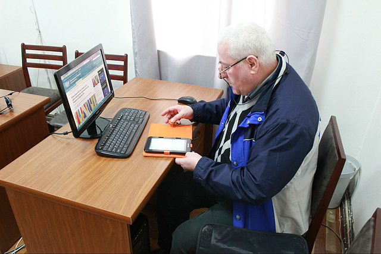 | 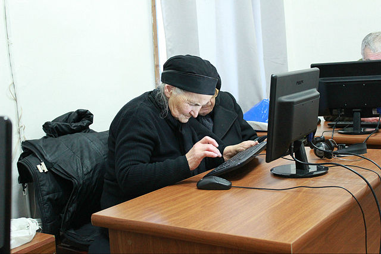 |
| Occupation | Office worker | Pensioner |
| Web habits | Uses internet for work, to browse the web, read the news, uses apps like messengers and Facebook |
Learning to use the internet; uses news channels and radio online; orders groceries deliveries through apps |
| Quotes | "I am quite comfortable using the internet, but the new cookies and trackers and that confuse me, so I'd like to learn about the effect those may have on my personal data." |
"At my age, it's sometimes difficult to do certain chores. It's important for me to stay secure online, but also to reap benefits like online home check-in or deliveries." |
| Knowledge level | Aware of technologies like cookies and trackers, as well as terms and conditions, but doesn't know details behind their use |
Beginner |
| Goals | Learn more about how companies are collecting, processing, and sharing user data he provides while using online services and apps |
Share as little data online as possible, staying safe online, learning how to handle cookies pop-ups, following and understanding news on technology developments |
| Needs/wants | Wants a comprehensible, simple guide that includes specific analytical and statistical data; he wants to have relevant data all in one place instead of browsing away and looking at long websites/articles that talk about things he already knows and is not interested in; additionally, he needs an accesible interface for his bad eyesight |
Wants to learn not only how to improve her skills in using her computer, but to uderstand what she is signing up for through using the technolgies new to her; needs accessible web interface to use with assistive technologies due to mobility and hearing deficits |
| Skills | Well-read, objective as possible, ex-statistics student | Long attention span, accessing sites she visits daily |
| Narrative | Has some pre-existing opinions, but is open to learn; values objective, factual data; is especially interested in politics |
Long retired secretary; used to be on top of all technology back in her working days, but since she stopped, she hasn't learnt anything about the new developments; since getting older, she needs help with daily chores when her family is not around, which makes her feel lonely; wants to be able to reach out for help |
*photos taken from Wikimedia Commons.
Exploring the audience needs in relation to design
User stories:
John:
As an office workerMargaret:
As a pensionerUser journey map/table:
| ACTION | Select topic | Browse tabs | Save information | Check credibility | Reach out |
|---|---|---|---|---|---|
| TASK LIST | A. Decide on an aspect to investigate (e.g. cookies) B. Search for the tab about them on the website |
A. Browse topic selection B. Sort by desired categories C. Select most liked items |
A. Locate desired info B. Check if chosen descriptions are correct (size/color in graphs etc.) C. Save tabs needed to account and do quizzes |
A. Check details and sources in each tab B. Ask questions/interact with the website |
A. Gather all info from the saved articles tab on the website B. Gather all sources list C. Reach out to linked resources, websites, organisations; in-person activities/workshops |
| FEELING ADJECTIVE |
the number of options |
the correctness or usefulness of information |
inability to interact and comment |
out access to lots of information at once for free |
|
| IMPROVEMENT OPPORTUNITIES |
Create a dedicated tab for each tool/aspect that enables surveillance capitalism to thrive |
Provide categories and sorting options Include photos of numbers/statistics as graphs Consider accessibility |
Simplify search flow Provide clear instructions and timeline of visited topics |
Add methods, such as comments or rather a "Contact Me" page/form for user to contact about questions/worries |
Include a review or description for each resource/organisation Introduce a reward system for contributing |
*design from the Google UX Design online course.
User need statements:
John:
John, a hard-working corporate office worker, needs to easily access reliable data and information without wasting time researching all over the web in order to learn about the values and practices of company he is working for when it comes to personal data processing.Margaret:
Margaret, an attentive pensioner, needs to quickly learn what happens to her data if she gives it away online in order to confidently benefit from online services that help her in daily functioning.